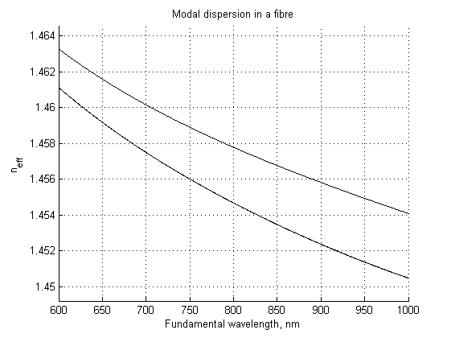
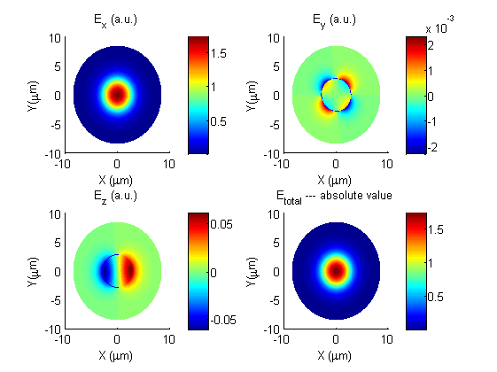
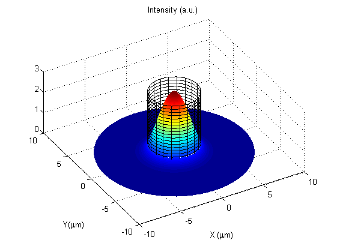
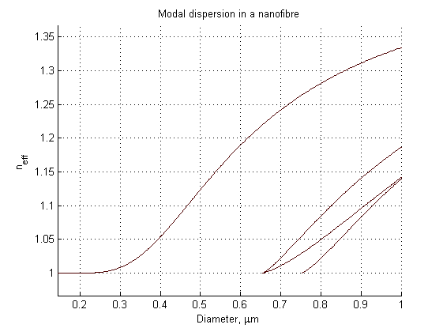

Optical Fibre Toolbox two-layer demo
This script demonstrates the use of Optical Fibre Toolbox functions for calculation of two-layer fibres modes.
(cc-by) K. Karapetyan et al., AG Meschede, Uni Bonn, 2008--2011
kotya.karapetyan@gmail.com, http://agmeschede.iap.uni-bonn.de
Contents
clc clear close all tStart = tic; addpath('..') fprintf('%s\n', 'Calculating...');
Calculating...
Specify the fibre parameters
% Note: diameter is specified in micrometers, wavelength in nanometers % Fibre materials (core, cladding) materials = {'sm800core'; 'silica'}; % Fibre structure description fibre = struct(... 'materials', {materials});
Create the task for dispersion curves calculation
% Argument for dispersion curves calculation argument = struct(... 'type', 'wvl',... % calculate vs. wavelength 'harmonic', 1,... % required 'min', 600,... % calculate from 'max', 1000); % calculate to % Specify which modes to search for modeTask = struct(... 'nu', [0 1 2],... % first modal index 'type', {{'hybrid', 'te', 'tm'}},... % mode types 'maxmode', 3,... % how many modes of each type and NU to calculate 'diameter', 5.6);%,... % parameter, structure diameter, if argument is wavelength %'region', 'cladding');
Find guided modes and calculate the dispersion curves
infomode = false; modes = buildModes(argument, fibre, modeTask, infomode); % Display calculated dispersion curves showModes(modes, 'Modal dispersion in a fibre'); % Show which modes have been calculated fprintf('Modes found:\n'); for i = 1:numel(modes) fprintf('%s\n', modeDescription(modes(i), infomode)); end % This fibre has a very low refractive index step between (0.005) and is % therefore weakly guiding. In a weakly guided fibre, modes HE21, TE01 and % TM01 lie very close to each other as can be seen in the picture. In the % weakly guidance approximation, the mode HE11 is sometimes denoted as LP01 % mode and the HE21, TM01, TE01 mode triplet as LP21 mode.
Modes found: HE 1 1 (1 hrm.) HE 2 1 (1 hrm.) TE 0 1 (1 hrm.) TM 0 1 (1 hrm.)
Field distribution
poiType = 'wvl'; poi = 900; par = 5.6; task = struct('modetype', 'HYBRID', 'modeindex', [1 1]); infomode = false; getWholeMode = false; n = neff(poiType, poi, par, fibre, task, infomode, getWholeMode); % d = par; window = 3 * d; lambda = poi; Nr = [500, 1000]; % inn, out Nphi = [64, 64]; % inn, out dr_inn = d/2 / Nr(1); dr_out = (window/2 - d/2) / Nr(2); dphi_inn = 2 * pi / Nphi(1); dphi_out = 2 * pi / Nphi(2); F = struct('dr', [dr_inn dr_out], 'dphi', [dphi_inn dphi_out], ... 'diam', [d window], 'E1', [], 'H1', [], 'E2', [], 'H2', []); FG = fieldGrid(F); [F.E1, F.H1] = modeField(lambda, d, n, fibre, task, FG.R1, FG.PHI1); [F.E2, F.H2] = modeField(lambda, d, n, fibre, task, FG.R2, FG.PHI2); F.FG = FG; displayField2(F, d) 
Mode dispersion in a nanofibre
Calculate mode dispersion diagram for a fixed wavelength and varying fibre diameter
Specify the fibre parameters
materials = {'silica'; 'air'};
nanofibre = struct(...
'materials', {materials});
argument = struct(...
'type', 'dia',... % calculate vs. wavelength
'min', 0.1,... % calculate from
'max', 1); % calculate to
modeTask = struct(...
'nu', [0 1 2],... % first modal index
'type', {{'hybrid', 'te', 'tm'}},... % mode types
'maxmode', 3,... % how many modes of each type and NU to calculate
'lambda', 900);%,... % parameter, structure diameter, if argument is wavelength
%'region', 'cladding');
modes = buildModes(argument, nanofibre, modeTask, false);
Display calculated dispersion curves
figure;
showModes(modes, 'Modal dispersion in a nanofibre');
 Show which modes have been calculated
fprintf('Modes found:\n'); for i = 1:numel(modes) fprintf('%s\n', modeDescription(modes(i), false)); end
Modes found: HE 1 1 (1 hrm.) HE 2 1 (1 hrm.) TE 0 1 (1 hrm.) TM 0 1 (1 hrm.)
Unlike in the weakly guidance example above, this nanofibre has a high refractive index step (about 0.5) and is therefore strongly guiding. All four modes HE11, HE21, TE01 and TM01 are therefore clearly distinct. The LP approximation is not valid in this case any more. The Optical Fibre Toolbox correctly simulates this situation using the full vector solution of the Maxwell equations.
toc(tStart)
Elapsed time is 61.084931 seconds.